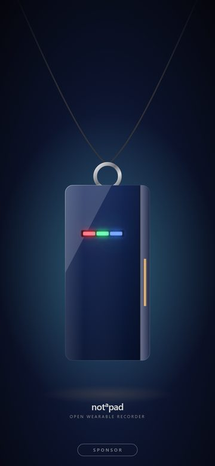
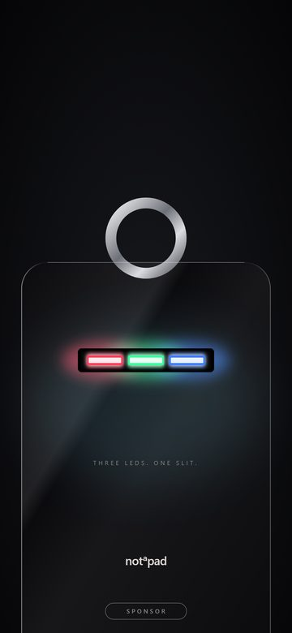
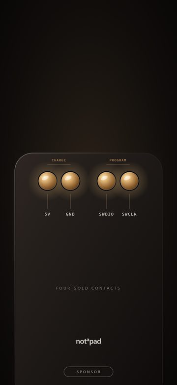
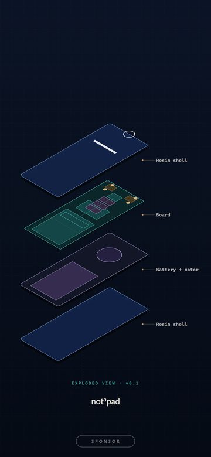
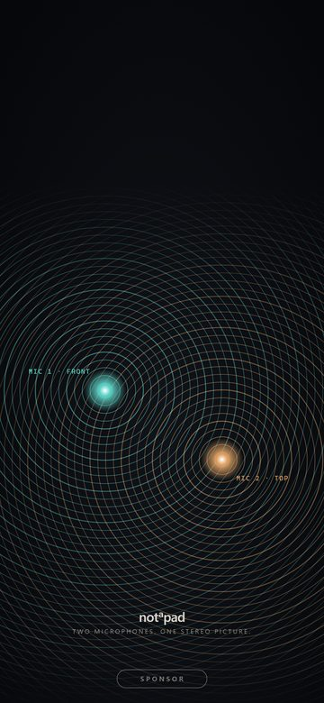
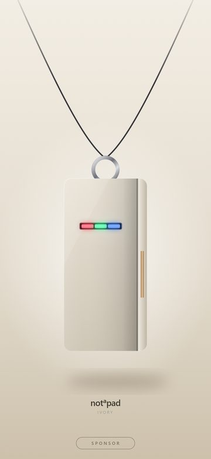
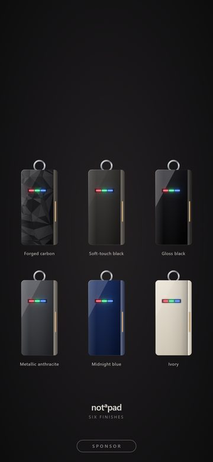
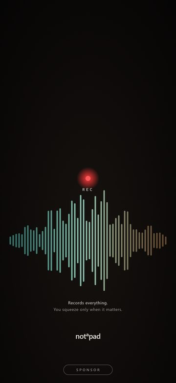

Records everything. You squeeze only when it matters.
The notªpad listens quietly all day long. Touch, light and vibration are the only interface, with no screen and no app to open, and you decide what each one means.
All day, then it recharges
From the moment you put it on to the moment you set it on its dock: over 11 hours of stereo recording (estimated). At night, while charging, it hands the audio to your phone, which transcribes it at leisure.
- 11.5 hestimated recording time
- 256 MBabout 11 hours of continuous stereo audio
- nightcharges, syncs, transcribes
Squeeze, and the recording knows
The sensors are on both sides: it only counts if you touch both, so your chest never triggers anything by accident. A squeeze marks a point of attention, or tells the notªpad to sync that stretch of audio first. Which gesture does what, and how light and vibration answer, is yours to set, just like the way your AI handles the notes.
- 1 squeezepoint of attention
- 2 squeezessync this segment first
- long squeezeyour own rule
Group notes you can feel
A note sent to a project reaches only that project's members: their notªpad lights up in the project colour and vibrates. Belong to two projects and you get both, each in its own colour. Nobody has to look at a phone.
Your AI, not ours.
Your notes stay yours. An open MCP server makes them available to the assistant you already use, with your own subscription: Claude, ChatGPT, Gemini or a local model. Organise them the way you like.
Concept v0.1: renders and features describe a project in development; runtime and capacity are estimates still to be verified on a prototype.
Wallpapers
Eight phone wallpapers, all approved. Download the full-size PNG for iPhone (1179 × 2556) or Android (1080 × 2400). The clock area is kept clear and a discreet "Sponsor" slot sits above the home bar.
























Progress and next steps
Honest status, updated at the end of each work session. The v0.1 board is not manufactured yet; only the test firmware and app have run, on a development board. This is a design in progress.
Concept and renders
Object, finishes and this presentation. Bill of materials and net list for the v0.1 board.
Datasheet checks
The E73 module exposes fewer GPIOs than first assumed, so the nRF52840 pinout was redone. The first microphone choice was bottom-port: replaced with a top-port part.
v0.1 board closed in KiCad
16.5 × 38 mm, 4 layers, 1.0 mm, components on the top side only. Electrical and design-rule checks pass with no unconnected nets. With 2 layers, 7 connections stayed open, and the JLCPCB Economic assembly does not take 4 layers at 0.8 mm, hence 1.0 mm.
Production files ready
Gerber, bill of materials and placement files for JLCPCB, PCBWay and ALLPCB, generated by scripts. In the JLCPCB placement file the microphones are rotated by 180 degrees, checked in their preview. A NextPCB variant was prepared too, then dropped for v0: it has no stock of the microphone and the quote was higher.
Charger and parts review
Charger first chosen as the MCP73831 at 50 mA, later replaced by the MCP73832 after the pre-order verification. The E73 variant with only a socket for an external antenna was rejected. The 256 MB NAND stays after comparing alternatives, including a pricier 2 Gbit part and a cheaper 1 Gbit one. Component cost is estimated at about 19 USD per monolith, mostly NAND and module.
Manufacturing route fixed: JLCPCB only
Quote: 97 EUR for 2 fully assembled and shipped v0.1 boards (Economic PCBA, 5 bare boards, 2 assembled). PCBWay, ALLPCB, NextPCB and home assembly were evaluated and dropped: there is no hot plate or paste at hand, so every board is assembled by JLCPCB. A cost review found no distributor beating LCSC/JLCPCB for the key chips, and a board using only the cheapest "Basic" parts is impossible (no BLE module, NAND, PDM microphones, RGB LEDs or touch ICs in that library); the remaining 7 extra-fee parts stay.
Carrier-board variant dropped
A variant on a Seeed XIAO nRF52840 carrier costs more than the E73 module, is 17.5 mm wide (as wide as the whole monolith) and has only 13 GPIOs against about 20 needed.
Open licences and sponsor search (22 Nov)
Hardware is released under CERN-OHL-S-2.0, software and documents under MIT. Requests for sponsorship were sent to several PCB and component manufacturers; nothing is agreed. A public GitHub issue is the contact channel.
Battery shortlist and contacts (22 Nov)
LiPo cells 602030, 401020, 401230 and 402020 were ruled out (too wide, too long or too small in capacity). The candidate is now the 381620 (3.8 × 16 × 20 mm, about 110 mAh, with protection still to be confirmed); the 501520 does not fit the 9 mm monolith, so only the 381620 remains. All figures are estimates from listings. Flat-head target contacts for the monolith and single pogo pins for the base were identified, with a wiring plan for the base (8 solder joints).
Animation fix and size correction (22 Nov)
The flickering panel that appeared while the monolith rotates is gone: the battery in the internal 3D model shared its back face with the shell. It is now 15 × 19 × 3.2 mm and sits 0.2 mm inside. The monolith length in the text is now 41 mm (38 mm is the board length). The page layout was reworked for phones (large object, a single caption instead of labels, a vertical MCP diagram with no sideways scrolling), and the group, gesture and MCP scenes were redone: two groups sharing one member, gestures shown as attention points with priority sync on a timeline, and customisable touch, light and vibration behaviours. Checked at 375, 390 and 1280 px wide, not on a real iPhone.
Automated pre-order verification (22 Nov)
69 repeatable tests in 8 areas, three runs: 41 passed, 25 warnings, 1 failure and 2 not verifiable at the third. The charger was changed to the MCP73832, the monolith went from 8 to 9 mm and the contact holes were widened to 1.1 mm. Details in the section below.
Monolith 9 mm and contact targets (22 Nov)
At 8 mm only 0.1 mm of resin was left on each face (3 mm module, 3.8 mm battery); at 9 mm there is 0.6 mm. The contacts are now 2.0 × 4.0 mm targets with the tip 0.1 mm out of the back, and the four holes grew from 1.0 to 1.1 mm: only the drill files changed, the copper is identical and the design-rule check is clean.
Test firmware run on a real XIAO board (22 Nov)
The firmware was flashed on a Seeed XIAO nRF52840 Sense (same nRF52840 chip, PDM microphone) with a battery and tested with the app: Bluetooth connection, recording and audio download work. The firmware records at 16 kHz, compresses with IMA ADPCM and keeps about 4 minutes in a ring of flash sectors; each sector is erased only after the app has received it, verified its CRC and saved it. Shutdown at 3.50 V and a watchdog are included. Automatic sync at 80% of the memory, audio quality and download speed have not been tested in depth yet.
Automatic transcription in the app (22 Nov)
The local web app now transcribes by itself after each sync, using Whisper running in the browser (transformers.js in a Web Worker, WebGPU or WASM): the small model on a PC, the base model on a phone, Italian language. The text keeps the time of each sentence and can be exported as TXT. The audio never leaves the device. In a test, 17 seconds of Italian speech were transcribed in 4.8 s with whisper-base on WebGPU. Not tried yet: the small model, Edge as an installed app, an Android phone. The app also stays a web app (PWA) for Android; Flutter is postponed.
A test bench to learn from (22 Nov)
This is an exploration phase, not the product. The firmware on the XIAO nRF52840 Sense plus a local web app (Web Bluetooth, data kept only in the browser) exist to understand which software features work and how fast, before the real board is here. Transcription, speaker recognition and commands will later move into the MCP server, so that the AI the user picks can use them as tools.
Smarter transcription (22 Nov)
Whisper in the browser now returns the time of each word, and a speech detector sends only the parts with a voice to the model. The default on a PC is the small model. The audio still never leaves the device.
Who is speaking (22 Nov)
A voice module builds voice prints with WeSpeaker ResNet34. The transcript shows "Me" (the owner, whose profile is created from the microphone or by confirming "that's me" on a transcript) and "Speaker 1, 2, 3...". Text is always in chronological order. Accuracy has not been measured yet.
Gestures on the device (22 Nov)
Using the motion sensor of the test board: a double tap starts or stops recording; a single tap is a command (5 yellow flashes, then the next 6 seconds become a separate piece, downloaded with priority, after which recording goes on).
First voice-command tests (22 Nov)
Saying "Command, turn on the light" and "Command, turn off the light" switched real smart lights through home automation. Recognition uses tolerant rules instead of an AI, so it copes with Whisper's mistakes, and a second small transcriber is dedicated to commands. These are first tests only: error rates and speed are still to be measured.
Wallpapers approved (22 Nov)
All eight phone wallpapers were approved and are published in the Wallpapers section above. The three LEDs are now drawn as separate lights behind the slit.
Testing the bench with real speech
Still to check: automatic sync at 80% of the memory, audio quality, download speed, battery behaviour, speaker recognition and command errors with real conversations. Results will be reported here, good or bad.
App on Android
The goal is to use the same app on an Android phone as an installable web page. That needs the page to be published over https, which is not done yet; nothing has been tried on a phone.
Rechecking the assembly quote
JLCPCB lists the E73 module as Standard PCBA only, and the 97 EUR quote was made for Economic PCBA. We are checking in the cart whether Economic accepts it; if not, the quote is redone and may be higher. It is the one failure left in the verification.
Waiting for the module
The nRF52840 module (E73-2G4M08S1C) was out of stock at JLCPCB, so 2 units were pre-ordered through its parts manager to wait in the JLCPCB warehouse for assembly. The board order is placed once they arrive; a Black Friday coupon runs until 2 December (not a promise of timing).
Waiting for sponsor replies
If any reply is positive, the quote will be updated and the sponsor credited here. Nothing is promised.
Parts outside JLCPCB
A shopping list is drafted: LiPo battery (381620 candidate, about 110 mAh, an estimate, to be confirmed), target contacts and single pogo pins, a 0820 coin vibration motor, a small epoxy kit, optionally an SWD probe and a magnetic pogo connector. Estimated 40 to 60 EUR; the whole v0 about 140 to 170 EUR (estimates).
Measure the bench, then move to the MCP server
Measure speed and command errors on the test bench, then design how transcription, speaker recognition and commands move into the MCP server so that the user's AI can call them as tools.
Shells, bring-up and charging base
Settle the assembly quote and pay JLCPCB once the module arrives; buy the battery (381620 with protection), 2.0 × 4.0 mm target contacts, motors and resin; design the two SLA half-shells at 9 mm, with a channel for the top microphone, sealed microphone ports and the ring bushing; fill in the online sponsor forms and prepare a grant application; when the boards arrive, test power rails, SWD, LEDs, microphones, NAND and touch; then build the charging base.
Final firmware and phone app
The firmware for the v0.1 board (Zephyr is the option) waits until the board is settled. The phone app stays a web app for now (a native Android app, possibly with Capacitor, is only a proposal; Flutter is postponed). The test firmware uses Arduino with the Bluefruit library. The pinout is already documented.

Routing preview of the closed board, per layer (115 vias). Follow along on GitHub. Order and timing are not promises.
Checked before we pay
The board is generated by scripts, so mistakes can be repeated just as easily. Before paying for assembly (22 Nov 2026), a reviewer agent ran 69 automated tests on the whole board: two friends with no electronics background, now with a repeatable review before every order.
What is tested
Rules and DRC (also with ignored rules switched on), pinout against datasheets, symbol against footprint, circuit maths (latch, reset, LEDs, LDO, microphones, consumption), BOM and placement for JLCPCB, mechanics, Gerber files and consistency between documents.
Two sources at least
Every value is compared between independent sources: datasheet, the single Python definition, schematic, netlist, board, Gerber, BOM and documents. Each test is a script in the verifica/ folder that ends in PASS, WARN, FAIL or NOT VERIFIABLE.
Charger would stress a pin
The MCP73831 status output, powered from 5V, would have pulled an nRF52840 pin to about 5 V, above its maximum. Fixed with the MCP73832: same footprint, open-drain output, Gerber files unchanged.
Assembly tier
JLCPCB lists the E73 module as Standard PCBA only, so the 97 EUR Economic quote must be rechecked before paying. This is the one failure left.
Not enough resin at 8 mm
With the 3 mm module and the 3.8 mm battery, only 0.1 mm of resin was left per face. The monolith is now 9 mm thick, which leaves 0.6 mm. Only the shells change, not the board.
Contact holes too tight
The chosen 2.0 × 4.0 mm target contacts need 1.1 mm holes, not 1.0 mm. Only the drill files changed; copper is identical and the design-rule check is clean. Fits still have to be proven on real boards.
What held up
ERC and DRC at 0, schematic-board parity 0, empty antenna keep-out. This review does not replace testing real boards.
Looking for sponsors
We are looking for a sponsor to build the first 2 to 5 working notªpad units. Several PCB and component manufacturers were contacted in November 2026; nothing is agreed yet.
What it would cover
- Fabrication and assembly of the boards (top side only)
- Components: nRF52840 modules, SPI NAND, PDM microphones
- SLA resin shells
This is the step needed before the software phase: firmware, Android app and the open MCP server.
What sponsors get
- Logo and "Sponsored by" credit on the README and this page
- A public build diary with photos
- Credit in every post and video
Project history
How the project got here, newest first. Two days of intense design work so far. The newest entries are work from the end of the latest session; their commits may not be public yet.
22 November 2026
- The test bench is defined, and it is an exploration phase: firmware on a Seeed XIAO nRF52840 Sense plus a local web app, to learn what the software can do and how fast before the real board exists. Later, transcription, speaker recognition and commands move into the MCP server. commit
- Whisper in the browser now gives the time of every word; only the stretches with speech are sent to it, and the small model is the default on a PC. commit
- "Who is speaking": voice prints with WeSpeaker ResNet34; transcripts show "Me" and "Speaker 1, 2, 3...", always in time order.
- Gestures on the device: double tap starts or stops recording; a single tap marks a command (5 yellow flashes, the next 6 seconds become a separate priority piece).
- First voice-command tests succeeded: "Command, turn on/off the light" switched real smart lights through home automation, using tolerant rules rather than an AI.
- First real test on hardware: the test firmware was flashed on a Seeed XIAO nRF52840 Sense with a battery. Bluetooth connection, recording and audio download to the app work. Automatic sync at 80%, audio quality and download speed are still to be tested.
- The test app now transcribes speech by itself after each sync, with Whisper running inside the browser (WebGPU or WASM, Italian); the audio never leaves the device. 17 seconds of speech took 4.8 s with the base model on WebGPU. The app will stay a web app, also for Android; Flutter is postponed.
- Consistency fix: the 501520 battery does not fit the 9 mm monolith, so only the 381620 remains.
- Tests of firmware and app begun on a Seeed XIAO nRF52840 Sense development board with a battery: the firmware records at 16 kHz, compresses to IMA ADPCM, stores about 4 minutes in a ring of 512 sectors and syncs with a local Windows web app, erasing each sector only after the app has received and verified it. It was written in the morning and tested on the real board in the evening (see above).
- All eight phone wallpapers approved and published in a new Wallpapers section; the three LEDs are drawn as separate lights.
- Third run of the automated pre-order verification: 69 tests, 41 passed, 25 warnings, 1 failure, 2 not verifiable. The one failure left is that JLCPCB lists the E73 module as Standard PCBA only, so the assembly quote has to be rechecked.
- Charger changed to the MCP73832: the MCP73831 status output would have pulled a microcontroller pin to about 5 V. Same footprint, Gerber files unchanged.
- Monolith thickness set to 9 mm (it was 8): with the module and battery chosen, 8 mm left only 0.1 mm of resin per face.
- Contact targets chosen (2.0 × 4.0 mm, tip 0.1 mm out of the back) and the four board holes widened from 1.0 to 1.1 mm.
- Presentation animation fixed: the flicker seen while the monolith rotates came from the internal battery model sharing a face with the shell. The text now gives the monolith size as 41 mm long (38 mm is the board). commit
- Page layout reworked for phones: a large object, one caption instead of labels, and a vertical MCP diagram with no sideways scrolling. commit
- Group, gesture and MCP scenes redone: two groups sharing one member, gestures as attention points with priority sync on a timeline, customisable touch, light and vibration behaviours. Checked at three screen widths, not on a real iPhone. commit
- Open licences chosen: CERN-OHL-S-2.0 for the hardware, MIT for software and documents.
- Sponsor search started: requests sent to several manufacturers, a public GitHub issue opened as the contact channel, and a "Looking for sponsors" section added here and in the README. commit
- Several LiPo cells were ruled out as too large or too small; the 381620 (about 110 mAh, an estimate) is the candidate. Flat-head target contacts for the monolith and single pogo pins for the base were identified; their shank diameter still has to be checked against the board holes.
21 November 2026
- Manufacturing route fixed: JLCPCB only, 97 EUR quoted for 2 assembled and shipped boards. Other manufacturers, a carrier-board variant and home assembly were dropped; the E73 module was out of stock, so 2 units were pre-ordered into the JLCPCB warehouse. A shopping list for the parts outside JLCPCB was written. commit
- Purchasing plan, production files and a public documentation update added. commit
- Notes on a microphone stock issue, with the part checked against its datasheet. commit
- The E73 variant that only has an external-antenna socket was rejected; a module stock issue was noted. commit
- Author name and city removed from the public files. commit
- The v0.1 board was moved to 4 layers, closed, and production files were added. Checks pass with no unconnected nets. commit
- Board moved to 4 layers at 1.0 mm and the charger part changed. Work in progress at the time. commit
- Project helper agents and the end-of-session routine were extended, and design decisions were logged. commit
- English README and presentation published, with this progress section and automatic publishing to GitHub Pages; local paths removed. commit
- Project set up in the repository: concept, renders, bill of materials and the first v0.1 board work in KiCad. commit